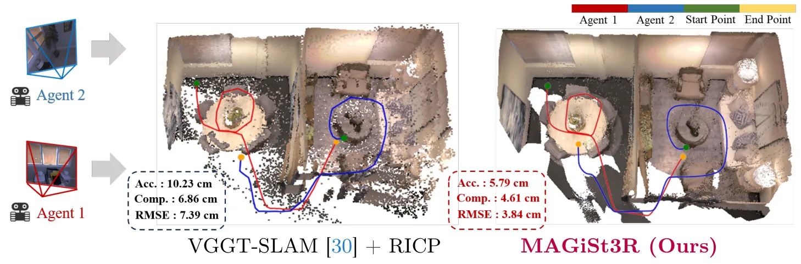
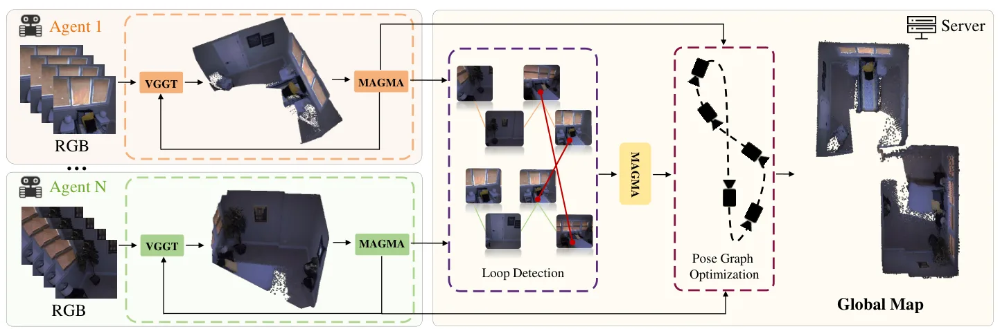
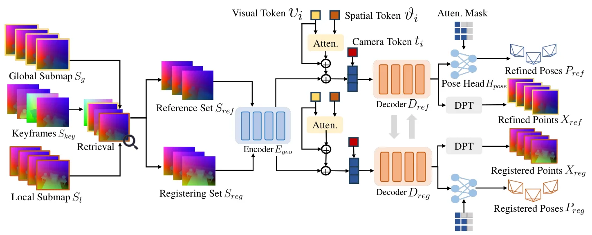

MAGiSt3R：单目 RGB 视频的多智能体前馈三维重建MAGiSt3R: Multi-Agent Feed-forward 3D Reconstruction from Monocular RGB Videos
直接命中多智能体建图、相机跟踪、地图合并和位姿图优化，实时性较强；摘要未给出定量幅度与通信成本。
一句话工作总结
以 3R 前馈局部点图、MAGMA 跨智能体地图合并和位姿图优化实现接近 10 FPS 的协作重建与跟踪。
摘要
MAGiSt3R 是面向单目 RGB 视频的多智能体三维重建框架，可同时执行重建和相机跟踪，速度接近 10 FPS。系统以 3R 系列前馈模型处理视频并回归局部点图，再由 MAGMA 合并模型在单个智能体内部和多个智能体之间融合局部地图，得到全局点图。为缓解前馈流水线中的累计相机漂移，系统进一步执行位姿图优化。作者在合成和真实数据集上报告了优于先进方法的重建与相机跟踪精度。
This paper presents MAGiSt3R, a multi-agent 3D reconstruction framework performing reconstruction and camera tracking for monocular RGB videos at almost 10 FPS. MAGiSt3R relies on a feed-forward model from the 3R family to process RGB videos and regress local point maps, and on a merging model, MAGMA, that combines local maps at both intra-agent and inter-agent levels to obtain the final global point map. Furthermore, MAGiSt3R performs pose graph optimization to mitigate cumulative camera drift occurring along the feed-forward pipeline. We evaluate MAGiSt3R on both synthetic and real-world datasets, demonstrating its superior reconstruction and camera tracking accuracy compared to state-of-the-art approaches.
中文解读摘录
图表/页面预览
{kind=link}

{kind=link}

{kind=link}
